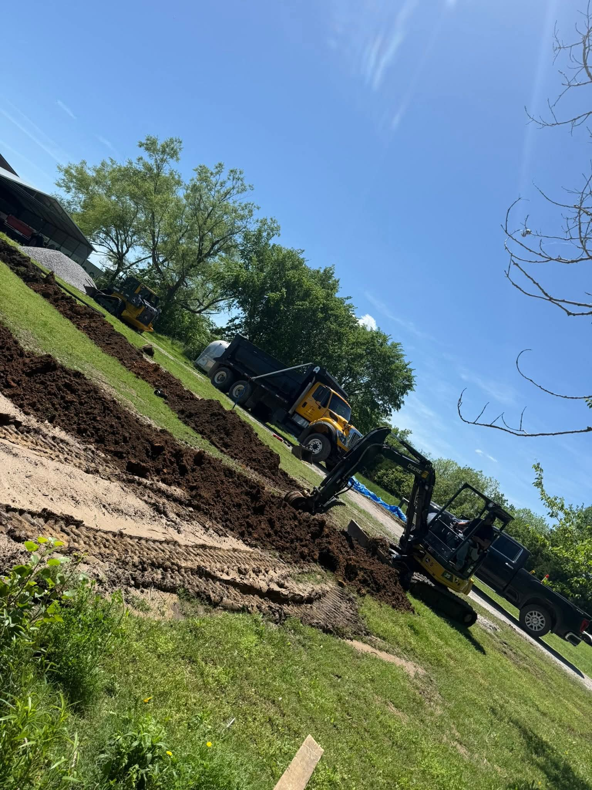
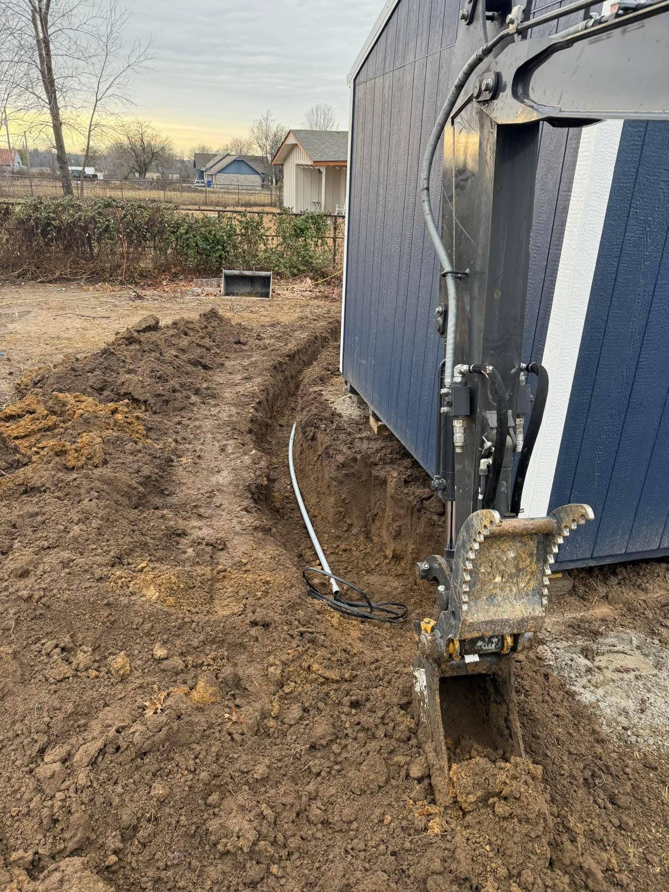
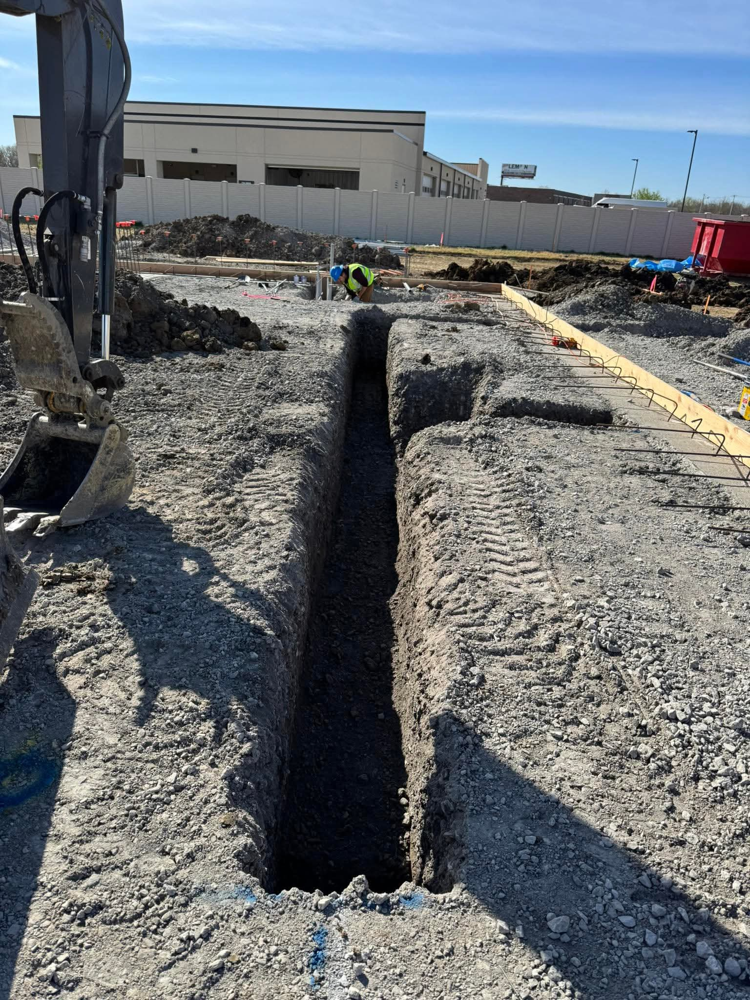
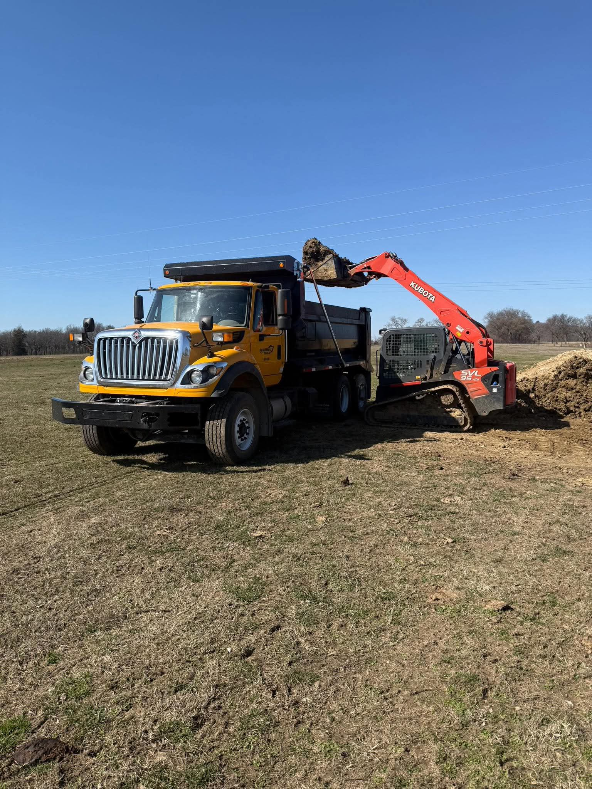
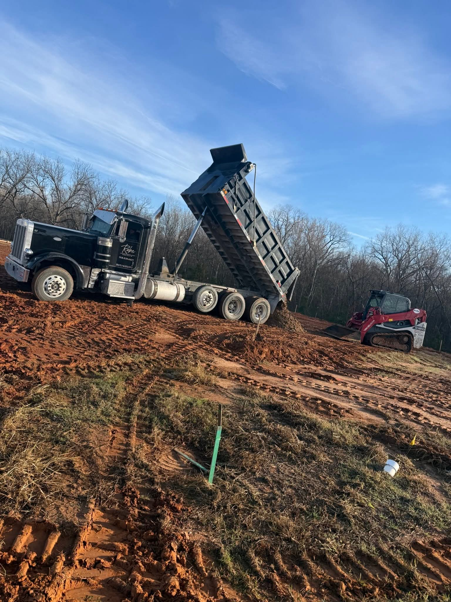

Ruba Underground handles excavation, trenching, and underground utility installation with the equipment and crew to get it done clean and on schedule.
📞 Call 918-530-6677Precise trenching for utility lines, drainage, and site work, cut clean and backfilled right.
Running conduit and utility lines below grade, from residential hookups to larger site runs.
Grading and prepping ground for construction, foundations, and drainage before the next phase starts.
Full dump truck fleet for hauling spoil, fill dirt, and material on and off the job site.





Ruba Underground is an excavation and underground utility contractor running a full fleet of dump trucks, excavators, and skid steers to get trenching, utility line work, and grading done right.
DOT certified (DOT# 4352493). Call for a free estimate on your next job.
Yes. Call 918-530-6677 for a free estimate on your excavation or underground utility project.
Excavation and trenching, underground utility installation, site grading and prep, and dirt hauling and trucking.
Yes. Ruba Underground is DOT certified, DOT# 4352493.
Yes. Ruba Underground's work covers both residential utility trenching and larger commercial site excavation.
Yes. Ruba Underground runs its own dump truck fleet for hauling spoil, fill dirt, and material, whether or not it's tied to an excavation job.
Call now for a free estimate on your excavation or underground utility project.